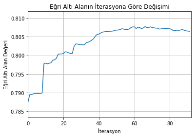

Bu yazımızda Microsoft tarafından hazırlanan ve Kaggle gibi platformlarda oldukça popülerleşen LightGBM kütüphanesini tanıtacağız. LightGBM kullanımı artan gradient boosting yöntemini kullanan bir kütüphane. Gradient Boosting yöntemini kullanan başka kütüphane ve modüller de mevcut. Örneğin scikit-learn üzerinden kullanabileceğiniz bir modül var. R kullanmayı tercih edenler için gbm kütüphanesi bir diğer alternatif. Ayrıca R ve Python üzerinde çalışabilen ve yine oldukça popüler bir kütüphane olan xgboost da gradient boosting yöntemini kullanan paketlere örnek olarak verilebilir. xgboost ve gbm paketlerini kullanmadığımı söylemem lazım. xgboost paketini Python üzerinden kullanmak çok kolay değil; ancak R üzerinden yüklemek Python’a göre daha kolay. scikit-learn paketine kıyasla LightGBMin avantajı ise oldukça hızlı olması. Hız farkı GPU kullanmadığınızda bile rahatlıkla görebileceğiniz düzeyde. LightGBM aynı zamanda scikit-learn komutlarını kullanmanıza imkan tanıyan bir katman (wrapper) ile geliyor.
Boosting
Boosting, kullanımı her geçen gün artan topluluk öğrenme (ensemble learning) yöntemlerinden biri. Boosting yöntemlerinin temeli, tahminleri rassal tahminden biraz daha başarılı zayıf öğrenen modellerin (weak learner) topluluk olarak tahmin yapması esasına dayanıyor. Örnek olarak bir ikili sınıflandırma problemi için zayıf öğrenen model, 0.5 olasılıktan biraz daha yüksek başarıyla tahmin yapan bir model olabilir. Boosting yöntemlerinde bu modeller sıralı olarak ve belirli ağırlıklar verilerek oluşturulur. AdaBoost yöntemi hatalı tahminlerin ağırlıklarını arttırarak sıradaki modeli oluşturarak hatayı azaltmaya çalışır. Gradient Boosting ise o iterasyonda yapılan hataları bir sonraki modelde öğrenmeye çalışarak tahmin yapar. Bu sayede ilk modellerde verideki örüntüler kabaca öğrenilir ve ileriki iterasyonlarda da yapılan hatalar düzeltilmeye çalışılır. Hatayı öğrenmek aynı zamanda modelin daha karmaşık yapıları öğrenebilmesini de sağlar. Gradient boosting ismi, tahmin etmeye çalıştığımız hatanın, fonksiyonunun gradyanının negatifine denk gelmesinden gelmektedir.
LightGBM
LightGBM paketinin dokümantasyonu parametreleri açıklama ve API’ı tanıtma konusunda başarılı. Aynı zamanda çeşitli uygulama örnekleri de mevcut. Paketi yüklemek için VC runtime uygulamasını yüklemiş olmanız şart. Uygulama Visual C++ yüklü olmayan bilgisayarlarda da LightGBM’in çalışmasını sağlayacak kütüphaneleri içeriyor. Bunu yükledikten sonra pip ya da conda ile yükleme yapabilirsiniz. Yükleme hakkında detaylı bilgi almak için paketin dokümanlarına bakabilirsiniz.
Bu paket benim dikkatimi Kaggle üzerindeki Instacart yarışmasıyla çekmişti. Bu yarışmanın forumlarındaki örneklere bakmanızı da tavsiye ederim. Hem verinin hazırlanması, hem de LightGBMin kullanımı konusunda iyi uygulamalara rastlayabilirsiniz.
Şimdi LightGBM paketinin kullanımını UCI dizinindeki banka pazarlama veri kümesi üzerinden inceleyelim. Amaç müşterilerin özelliklerine ve ekonomik göstergelere bakarak müşterilerin kampanya tekliflerine dönüş yapıp yapmayacağını tahmin etmek. Elimizdeki problem iki sınıftan oluşan bir sınıflandırma problemi, ancak LightGBM farklı problem sınıfları için de kullanılabiliyor.
Paketleri yükleyerek ve veri kümesini okuyarak başlayalım.
# Veri çerçevesi oluşturmak için Pandas paketini kullanıyoruz.import pandas as pd# Veri kümesini ikiye bölmek ve performans ölçütlerinin hesaplanması için gerekli modüller.from sklearn.model_selection import train_test_splitfrom sklearn.metrics import roc_auc_score, accuracy_score# Grafik çizdirmek için gerekli paket.import matplotlib.pyplot as plt# LightGBM paketi.import lightgbm as lgbimport numpy as np#Uyarı mesajlarını kapatmak içinimport warningswarnings.filterwarnings("ignore")# Veri çerçevelerini daha güzel görselleştirmek içinfrom IPython.display import display, HTML# Veri kümesini okuyalım ve etiketleri ayıralım. Veri çerçevesindeki sütun isimlerini de değiştiriyoruz.df = pd.read_csv('bank-additional-full.csv', delimiter=';')y= (df['y'] =='yes')*1df.drop('y', axis=1, inplace =True)df.columns = ['yaş', 'iş', 'medeni_durum', 'eğitim', 'gecikme', 'ev', 'borç', 'iletişim', 'ay', 'haftanın_günü','süre', 'kampanya', 'önceki_iletişimden_sonra_geçen_gün', 'iletişim_sayısı', 'iletişim_sonucu', 'işsizlik', 'tüketici_fiyat_endeksi', 'tüketici_güven_endeksi', 'euribor_faizi', 'çalışan_sayısı'] print(df.head())
yaş iş medeni_durum eğitim gecikme ev borç iletişim \
0 56 housemaid married basic.4y no no no telephone
1 57 services married high.school unknown no no telephone
2 37 services married high.school no yes no telephone
3 40 admin. married basic.6y no no no telephone
4 56 services married high.school no no yes telephone
ay haftanın_günü süre kampanya önceki_iletişimden_sonra_geçen_gün \
0 may mon 261 1 999
1 may mon 149 1 999
2 may mon 226 1 999
3 may mon 151 1 999
4 may mon 307 1 999
iletişim_sayısı iletişim_sonucu işsizlik tüketici_fiyat_endeksi \
0 0 nonexistent 1.1 93.994
1 0 nonexistent 1.1 93.994
2 0 nonexistent 1.1 93.994
3 0 nonexistent 1.1 93.994
4 0 nonexistent 1.1 93.994
tüketici_güven_endeksi euribor_faizi çalışan_sayısı
0 -36.4 4.857 5191.0
1 -36.4 4.857 5191.0
2 -36.4 4.857 5191.0
3 -36.4 4.857 5191.0
4 -36.4 4.857 5191.0
Verideki değişkenlerin anlamlarını aşağıda ve veri kümesini indirebileceğiniz web sayfasında bulabilirsiniz:
yaş: Müşterinin yaşı.
iş: Müşterinin işinin tanımı.
medeni_durum: Müşterinin medeni durumu.
eğitim: Müşterinin eğitim durumu.
gecikme: Borcunu ödemekte gecikme yaşadığı kredi var mı?
ev: Ev kredisi ödüyor mu?
borç: Başka kredi ödüyor mu?
iletişim: İletişim için seçtiği telefon tipi (sabit hat, GSM).
ay: En son iletişim kurulan ay.
haftanın_günü: En son iletişim kurulan gün (haftanın günü olarak).
süre: En son iletişim kurulan süre. Bu değişken 0 değerini aldığında etiket de 0 (ya da no) değerini aldığı için sağlıklı bir analiz için bu değişkeni veri kümesinden çıkarıyoruz.
kampanya: Müşteri için bu kampanya özelinde kaç kere iletişim kurulduğu bilgisi.
önceki_iletişimden_sonra_geçen_gün: Müşteriyle başka bir kampanya için iletişim kurulan günden bu yana geçen zaman. Değer 999 ise iletişim kurulmadığı anlamına geliyor.
iletişim_sayısı: Müşteriyle bu kampanya öncesi kurulan iletişim sayısı.
iletişim_sonucu: Önceki kampanya iletişiminin sonucu.
Gördüğümüz gibi son beş değişken daha çok sosyal ve ekonomik göstergelerden oluşuyor. Bu göstergeler kampanya teklifinin yapıldığı zamana ait değerleri içeriyor. Veri kümesinde eksik değerler olup olmadığını inceleyelim.
print(df.isnull().sum())
yaş 0
iş 0
medeni_durum 0
eğitim 0
gecikme 0
ev 0
borç 0
iletişim 0
ay 0
haftanın_günü 0
süre 0
kampanya 0
önceki_iletişimden_sonra_geçen_gün 0
iletişim_sayısı 0
iletişim_sonucu 0
işsizlik 0
tüketici_fiyat_endeksi 0
tüketici_güven_endeksi 0
euribor_faizi 0
çalışan_sayısı 0
dtype: int64
Veri kümesinde eksik değer yok. Aslında bilinmeyen (unknown) gibi değerler mevcut. Ayrıca önceki_iletişimden_sonra_geçen_gün değişkeni de 999 değerini aldığında bu değişkenin tanımlı olmadığı duruma denk geliyor. Şimdilik eksik değerlere odaklanmayalım ancak ileride eksik değerlerle tahmin yapmayı da göreceğiz.
Veri kümesinde eksik değer bulunmasa da, kategorik değişkenler bulunmakta. Örnek olarak iş sütununu inceleyelim.
Kategorik değişkenleri sayısal hale getirmemiz gerekiyor. Bu amaçla scikit-learn paketindeki LabelEncoder modülünü kullanabiliriz. Bahsettiğim modül değişkenleri 0 ve değer sayısı - 1 (bu örnekte 12 ayrı değer olduğu için 11) arasındaki sayılara çevirecek. Örnek olarak housemaid 0 değerini alırken student 11 değerini alacak. Kategorik değişkenleri 0 ve 1 değerleri alan kukla değişkenlere çevirmek için LabelBinarizer modülünü kullanabilirsiniz. Veri kümesinin boyutunu arttırmamak için ben LabelEncoderı kullandım. LightGBM kategorik değişkenleri belirttiğimiz takdirde, bu değişkenleri o bilgiye göre değerlendirebiliyor. Ayrıca, LightGBM birbirini dışlayan (mutually exclusive) sütunları kendi içinde birleştirdiği için yapacağımız iki değişiklik de aynı kapıya çıkacak.
Veri kümesindeki kategorik değişkenleri sayısal hale getirelim.
from sklearn.preprocessing import LabelEncoderkategorik_sutunlar = ['iş', 'medeni_durum', 'eğitim', 'gecikme', 'ev', 'borç', 'iletişim', 'ay','haftanın_günü', 'iletişim_sonucu']for i in kategorik_sutunlar: le = LabelEncoder() df[i] = le.fit_transform(df[i])print(df.head())
Burada şunu belirtmem gerekiyor. Yaptığımız dönüşüm işlemini geri dönüşsüz olarak yaptık. Yani dönüştürdüğümüz kolonlardaki değerleri kaybettik. Veri kümesinin orijinal versiyonuyla bir eşleştirme yaparak bu değerleri tekrar elde edebiliriz. Eski değerleri koruyarak bu değişimi yapmak scikit-learn ile biraz daha zor bir işlem ve bu yazının konusunun dışında. Ancak derin kopyalama ile veri çerçevesinin orijinalinin bir kopyasını oluşturmak mümkün.
Veri kümesini analize uygun hale getirdiğimize göre eğitim ve sınama için ikiye bölelim ve süre değişkenini kümeden çıkartalım.
LightGBM, numpy sıralı nesneleri ve pandas veri çerçeveleri yanında kendi veri kümesi (Dataset) ile de çalışabiliyor. Veri kümesi oluştururken etiket değerlerini (label) ve verinin kendisini (data) veri kümesine tanıtmamız gerekiyor. free_raw_data=False opsiyonuyla da veri kümesini oluştururken kullandığınız veri çerçevesi ya da sıralı nesnelerin kodun ilerleyen kısımlarında kullanılabilmesini sağlıyor. Veri kümelerini oluştururken kategorik değişkenleri tanımlamak mümkün olsa da biz bunu modelin eğitilmesi sırasında yapacağız.
# Veri kümesi oluşturalım.lgb_train = lgb.Dataset(data=df_train, label=y_train, free_raw_data=False)
Modelin parametrelerini belirleme
Scikit-learn’den farklı olarak kuracağımız modelin parametrelerini bir sözlük olarak tanımlamamız gerekiyor. LightGBM daha çok parametre içerdiği için hepsinden bahsetmek yararlı olmayabilir. Ama en önemli parametreleri aşağıda bulabilirsiniz:
task: Eğitim için ‘train’ değerini kullanabiliriz. Bunun yanısıra tahmin ve test için ‘predict’ ve modeli yeni veri ile güncellemek için ‘refit’ değerlerini kullanabiliriz.
boosting_type: Boosting için kullanacağımız yöntemi belirtmek için kullanıyoruz.
‘gbdt’ karar ağaçları temelli gradient boosting,
‘rf’ rastgele orman,
‘goss’ Gradient-based One-Side Sampling, enküçüklemek istediğimiz hata fonksiyonuna çok fazla katkısı olmayan gözlemleri kısmen dışarıda bırakan bir yöntem,
‘dart’ Dropouts meet Multiple Additive Regression Trees, gradient boosting yönteminde aşırı uyumu engelleyen bir yöntem.
objective: Çözeceğimiz problem tipi ve enküçükleyeceğimiz hata fonksiyonunu belirtiyor. LightGBM sınıflandırma, bağlanım, sıralama gibi problemleri çözebilen bir kütüphane. En sık kullanacağız problem tiplerini aşağıda bulabilirsiniz:
‘binary’: ikili sınıflandırma problemleri için,
‘regression_l1’ ortalama mutlak hatayı enküçükleyen bağlanım problemleri için,
‘regression_l2’ ortalama karesel hatayı enküçükleyen bağlanım problemleri için,
‘multiclass’ çok sınıflı sınıflandırma problemleri için,
‘lambdarank’ sıralama problemleri için kullanılabilir. Bahsettiklerim dışında birçok amaç fonksiyonunu kullanmanız mümkün.
metric: Modelin başarısını değerlendirmek için kullanacağımız değerlendirme ölçütü. LightGBM birden fazla ölçütü desteklediği gibi, bu değeri boş bırakmanız halinde belirttiğiniz objective değerine uygun bir ölçüt seçecektir. Yukarıda belirttiğimiz uygulamalar için aşağıdaki ölçütler uygun olabilir:
‘AUC’: eğri altı alan
‘binary_error’: isabetlilik
‘binary_logloss’: logaritmik kayıp fonksiyonu (sınıflandırma problemlerinde atanan olasılıklara göre değişen bir hata fonksiyonu)
‘l1’: ortalama mutlak hata
‘l2’: ortalama karesel hata
‘multi_error’: çok sınıflı sınıflandırma problemlerinde isabetlilik
‘multi_logloss’: çok sınıflı sınıflandırma problemlerindeki olasılıksal hata
num_leaves: Her iterasyonda oluşturulacak karar ağacının yaprak sayısı. Bu rakamın yüksek olması yöntemin çalışma süresini uzatıp performansını düşürecektir. Boosting iterasyonlarındaki tahminler çok iyi yöntemlere ihtiyaç duymaz.
learning_rate: Bu değer yöntemin ilerledikçe oluşturulan karar ağaçlarının önemindeki azalma oranını gösterir. Değerin yüksek olması hatayı tahmin eden karar ağaçlarının önemini arttıracağı için sonucu kötüleştirebilir.
num_boosting_round: Yöntemde kullanacağımız iterasyon sayısını belirler. İterasyon sayısının yüksek olması aşırı uyuma yol açabilir; düşük olması ise örüntüleri öğrenmemizi engeller. num_leaves, learning_rate ve num_boosting_round değerlerini birlikte değerlendirmemiz gerekir.
En temel parametrelerden oluşan bir model kurarak başlayalım. Modelimiz bir ikili sınıflandırma problemi. Eniyilenecek ölçüt olarak eğri altı alan değerini seçelim. Modeli eğitmek için train fonksiyonunu kullanacağız ve kategorik öznitelikleri de belirtiyoruz.
Şimdi eğittiğimiz modelin başarısına bakalım. Bu amaçla predict fonksiyonunu kullanacağız. Alternatif olarak task değerini değiştirmeyi de tercih edebilirdik.
# Tahmin ve değerlendirmey_pred = gbm.predict(df_test)print('Eğri altı alan değeri:', roc_auc_score(y_test, y_pred))print('İsabetlilik değeri:', accuracy_score(y_test, ( y_pred>=0.5)*1))
Eğri altı alan değeri: 0.805879217343
İsabetlilik değeri: 0.901756089666
Buraya kadar scikit-learn üzerinde yaptıklarımıza oldukça benzer bir akış izledik. Ancak eğittiğimiz modelin başarısını değerlendirmek için bu amaçla oluşturduğumuz veri kümesini kullanabiliriz. Bu sayede, değerlendirme için kullandığımız veri kümesinde en iyi sonucu verecek iterasyonu (dolayısıyla modeli) kullanabiliriz. Bu özellik, aşırı uyum gibi problemlerin önüne geçebilir.
Bu özelliği kullanmak için iterasyon sayısını arttıralım. Aşağıdaki kodda modelin eğitimini 150 iterasyon boyunca (num_boost_round değeri) sürdürüyoruz. Ancak 25 iterasyon (early_stopping_rounds değeri) boyunca iyileşme sağlayamazsak, modelin eğitilmesini durdurup en iyi sonucu veren iterasyonu kullanacağız. Burada sonuçların bu noktadan sonra tekrar iyileşmeyeceğini varsayıyoruz. Aşırı uyum gibi nedenlerle, bu varsayımın geçerli bir varsayım olduğunu düşünebiliriz.
# Değerlendirme veri kümesini oluşturuyoruz.lgb_eval = lgb.Dataset(data=df_test, label=y_test, reference=lgb_train, free_raw_data=False)# Eğitim parametrelerini belirleyelimparams = {'task': 'train','boosting_type': 'gbdt','objective': 'binary','metric': 'auc','num_leaves': 31,'learning_rate': 0.05,'verbose': -1}print('Eğitim...')# Modeli eğitelim# Bu sefer değerlendirme veri kümesini de tanıtıyoruz.evals_result={}gbm = lgb.train(params, lgb_train, valid_sets = lgb_eval, categorical_feature = kategorik_indeks, num_boost_round=150, early_stopping_rounds=25, evals_result=evals_result)print('Eğitim bitti...')# Tahmin ve değerlendirmey_pred = gbm.predict(df_test, num_iteration=gbm.best_iteration)print('En iyi sonucu veren iterasyon: ', gbm.best_iteration)print('Eğri altı alan değeri:', roc_auc_score(y_test, y_pred))print('İsabetlilik değeri:', accuracy_score(y_test, ( y_pred>=0.5)*1))
67 numaralı iterasyonda en iyi sonucu elde ettik. 25 iterasyon boyunca daha iyi bir sonuç elde edemediğimiz için 92 numaralı iterasyondan sonra modeli eğitmeyi durdurduk.
Modelle ilgili çeşitli başarı ölçütlerini ve tahmin amacıyla kullandığımız özniteliklerin önemlerini çizdirmek için de fonksiyonlar içeriyor. plot_metric ile modelde kullandığınız başarı ölçütlerinin grafiğini çizdirmeniz mümkün.
print('Eğri altı alan...')ax = lgb.plot_metric(evals_result, metric='auc')ax.set_title('Eğri Altı Alanın İterasyona Göre Değişimi')ax.set_xlabel('İterasyon')ax.set_ylabel('Eğri Altı Alan Değeri')ax.legend_.remove()plt.show()
Eğri altı alan...

Şekle göre ilk 20 iterasyonda başarının ciddi şekilde arttığı görülüyor. 40 numaralı iterasyondan sonra sonuçlardaki iyileşme daha az. 67 numaralı iterasyondan sonra ise sonuçlar kötüleşmeye başlamış (aşırı uyum).
scikit-learn üzerinde olduğu gibi LightGBM de özniteliklerin önemini görmemizi sağlayan bir fonksiyon içeriyor. plot_importance ile modelin, istediğiniz sayıda en önemli özniteliğini ağırlıklarıyla birlikte şekle dökebilirsiniz.
Aşağıda 10 öznitelik için (ve en iyi sonucu aldığımız iterasyondaki) önem grafiğini görebiliriz.
euribor_faizi,yaş ve kampanya önemi yüksek, yani kampanyaya cevabı belirleyen, özniteliklerden.
Eksik veri ile çalışma
LightGBM, scikit-learn paketinin aksine eksik değerlerle çalışmaya da izin veriyor. Örnek olarak önceki_iletişimden_sonra_geçen_gün değeri 999 olan müşterilerin bu değerini NaN yapalım.
Gördüğümüz gibi eksik değerlerle yapılan tahminler biraz daha iyi sonuçlar verdi. Ancak her zaman bu şekilde olacağının bir garantisi yok. Hangi modeli kullanacağımızı belirlemek için birden fazla alternatifi çarpraz doğrulama ve istatistik yöntemleriyle test etmemiz gerekecektir.
LightGBM veri analitiği konusunda kullanabileceğiniz bir çok aracı içeren bir paket. Ancak scikit-learn gibi uçtan uca bir çözüm sunmuyor. Veri işleme ve model sonuçlarını değerlendirme gibi alanlarda scikit-learn altındaki modülleri kullanmak durumunda kaldık. Bu noktada, LightGBM paketinin bir yapay öğrenme kütüphanesi olmadığını ve gradient boosting yöntemine dayanan bir kütüphane olduğunu hatırlatalım.
Bu yazının Jupyter Notebook dosyasına Github dizinimizden erişebilirsiniz.